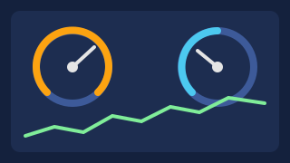

War Thunder Telemetry Dashboard
Aplikace v Javě, která čte živá data z API hry War Thunder a ukazuje je na přehledné palubní desce. V testovacích jízdách umí přepsat i herní hodnoty, třeba výšku nebo rychlost.
Zdrojový kód aplikace War Thunder Telemetry Dashboard na GitHubu